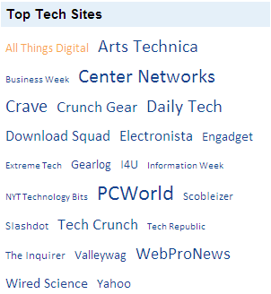

Refer to the Getting Started section for prerequisites needed to add a tag cloud control to an ASP.NET MVC application.
Using Builder
The following steps explain how to add a tag cloud control to an application through the builder.
1. In the controller, pass the model to the view.
|
[Controller] public ActionResult Index() { Northwind data = SqlCE; //Passing the model to the view. return View(data.Blogs); }
|
2. Create a strongly typed view.
3. In View, create a list of tag items and invoke the tag cloud helper with the control ID as the first argument followed by the TagItems method with the created list as an argument.
|
View[ASPX] <%List<TagItems> tagItems = new List<TagItems>(); foreach (var item in Model.OrderBy(p => p.Title)) { tagItems.Add(new TagItems { TagName = item.Title, Frequency = (int)item.Rank, NavigatetUrl = item.Website }); } %> <%=Html.Syncfusion().TagCloud("myTagCloud") .TagItems(tagItems) .Title("Top Blog Sites")%>
|
|
View[cshtml]
@{List<TagItems> tagItems = new List<TagItems>(); foreach (var item in Model.OrderBy(p => p.Title)) { tagItems.Add(new TagItems { TagName = item.Title, Frequency = (int)item.Rank, NavigatetUrl = item.Website }); } }
@{ Html.Syncfusion().TagCloud("myTagCloud") .TagItems(tagItems) .Title("Top Blog Sites").Render();}
|
4. Build and run the application.
Using Properties Model
The following steps explain how to add a tag cloud control to an application through properties model.
1. In the controller, create an instance of TagCloudModel and define the TagItems property with a list of tag items.
2. Pass the instance through the view-specific data to the view.
|
[Controller] public ActionResult Index() { Northwind data = SqlCE; //Create an instance of TagCloudModel. TagCloudModel myModel = new TagCloudModel(); myModel.Title = "Top Tech Sites";
//Create a list of tag items. foreach (var item in data.Blogs.OrderBy(p => p.Title)) { myModel.TagItems.Add(new TagItems { TagName = item.Title, Frequency = (int)item.Rank, NavigatetUrl = item.Website }); }
//Pass the instance to the view through the view data. ViewData["myTagCloud"] = myModel; return View(); }
|
In the view, invoke the tag cloud helper with the view data key as the control ID.
|
.View[ASPX] <%=Html.Syncfusion().TagCloud("myTagCloud")%>
|
|
View[cshtml] @{ Html.Syncfusion().TagCloud("myTagCloud").Render();}
|
3. Build and run the application.
The TagItems class has three properties:
· TagName - Sets the text that will be displayed within the cloud.
· Frequency - Specifies the degree of importance of the tag.
· NavigateUrl - Specifies the URL to navigate when clicking.
 Note: When Frequency is undefined, the
importance of the each tag will be assigned randomly.
Note: When Frequency is undefined, the
importance of the each tag will be assigned randomly.
The following figure shows the output of the tag cloud.

Figure 272: Tag Cloud
A sample demonstrating a basic tag cloud control can be downloaded from the following link:
Note: The version number for the assemblies has
been set to 8.3.0.20 in the Web.config file of the sample. Please change the
version number to the appropriate version in the Web-2008.config or
Web-2010.config file (available in the root directory) and they will
automatically update the Web.config file.